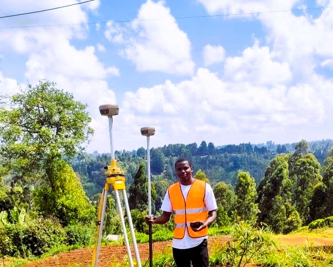
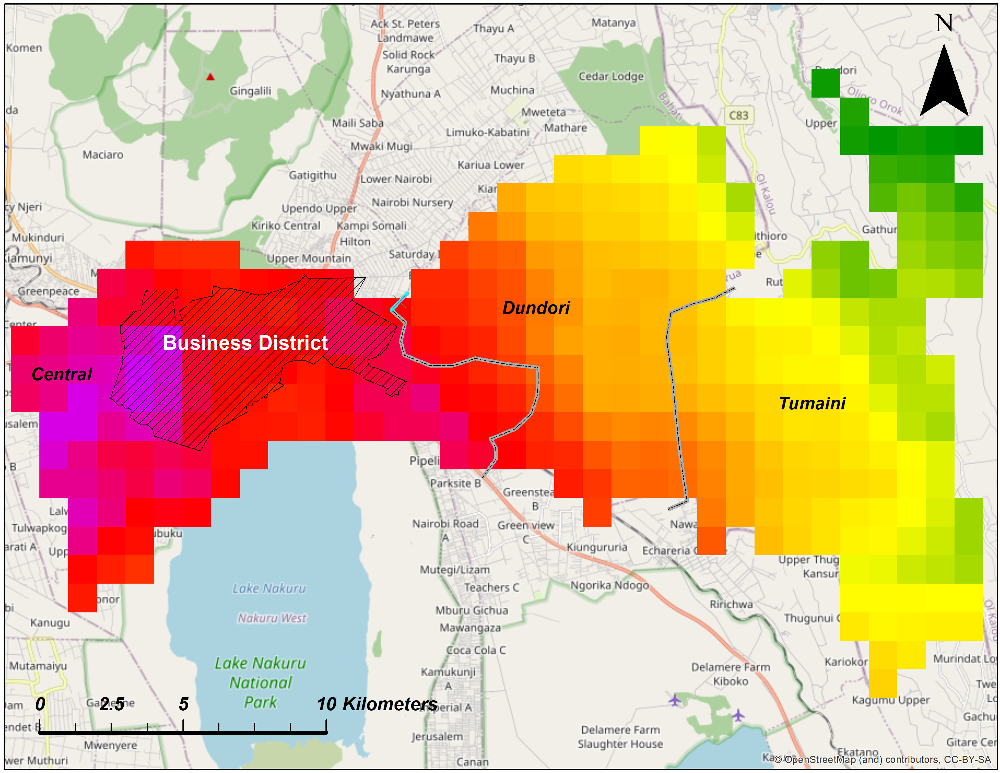
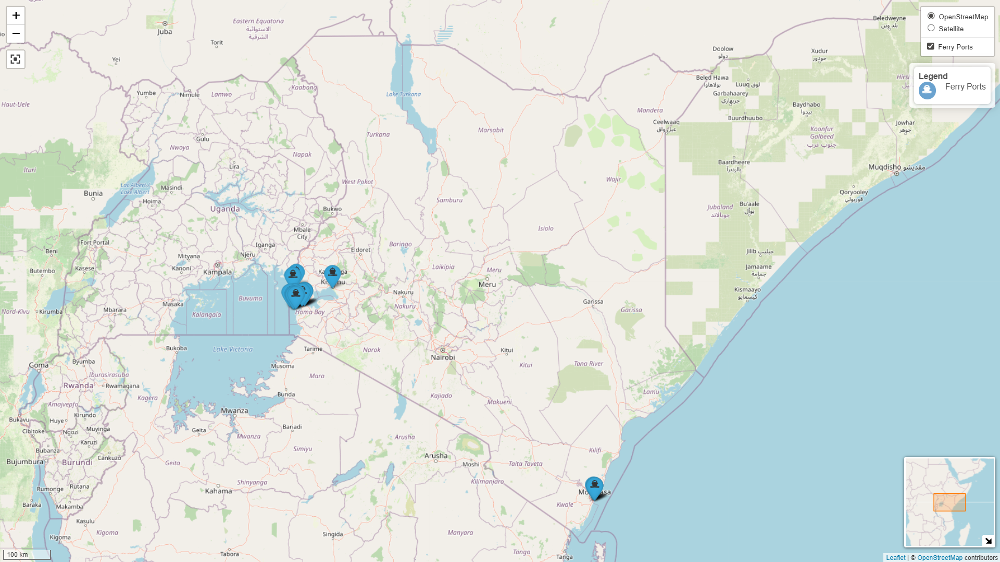

Selected Work
Land Survey
Professional land surveying services covering cadastral, geodetic, plane and topographic surveys. Extensive field experience with RTK, GPS, Total Station, AutoCAD mapping, and technical documentation. Work delivered for land development, parcel mapping, infrastructure planning, and property registration.


GIS & Spatial Analysis
Advanced GIS mapping, remote sensing, spatial modeling and environmental analysis. Applications in land use planning, environmental management, disaster risk assessment, hydrology, climate analysis, urban planning and decision-support systems.
Air Pollution Exposure Mapping
Spatial modeling of population exposure to air pollutants using emission sources, land use data, meteorological inputs and settlement distribution to identify vulnerable populations and guide public health interventions.


Land Use / Land Cover Change
Satellite-based classification and change detection for vegetation monitoring, deforestation tracking, regeneration analysis, urban expansion and sustainable land management planning.
Interactive Web Mapping
Development of interactive web maps using spatial data visualization, real-time mapping, user interaction layers, spatial storytelling, and decision-support interfaces for planning and infrastructure analysis.


Road Accident Hotspot Analysis
GIS-based accident distribution mapping and kernel density analysis to identify high-risk corridors and accident hotspots for road safety planning and infrastructure intervention.
Research Assistance
GIS-supported research in agriculture, climate, hydrology, urban systems and environmental management including field data collection, spatial modeling, mapping, analysis and reporting for academic and applied research projects.

Web & App Development
Design and development of modern web platforms, dashboards, GIS web apps, data-driven systems, secure databases, interactive platforms and digital services for institutions, firms and research organizations.
Environmental Services
Environmental assessments, sustainability planning, GIS-based impact analysis, natural resource management, land suitability modeling and environmental monitoring for sustainable development projects.